Gothic Basin
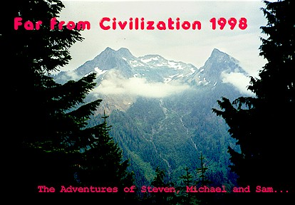
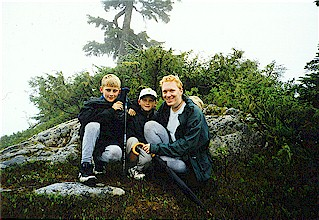
Stephen and Sam flew in Wednesday night, and we prepared to leave for the mountains the next day. We bought a smaller sleeping bag for Sam, and cobbled together food and equipment as necessary. Stephen could hardly sleep from excitement.
I woke the boys up at 6, and we got into our special “mountain clothes.” In the cold, wet mountains of the Cascades it’s important to stay dry or at least not get too cold when you are wet. The boys were used to wearing cotton clothing which is a complete disaster in the hills. When wet, cotton looses all insulating abilities…you may as well take it off! That’s why synthetic, wool and fleece clothing are required for the mountains. We were able to get Stephen and Sam into 90\% non-cotton clothing which was good enough for me.
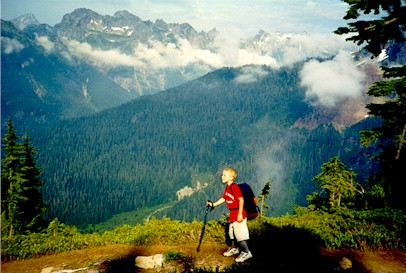
In the car, after an hour of driving through urban sprawl we entered the Mountain Loop Highway with increasing views of forested hills and roaring rivers. Stephen wanted to take all his pictures at once here, while Sam was holding back admirably. He only had 24 pictures, and was intent on waiting until he saw something that gave him a heart attack before using one!
We drove by Big Four Mountain, which was very impressive and picture-worthy. Soon, we had parked the car across from the gated road to Monte Cristo and had our packs on. We began the mile walk up the dirt road with the boys marveling at the high valley walls above us and the river below. The weather was cloudy but the sun was beginning to burn through.
Stephen and Sam kept up with my fast pace very well, and I was beginning to worry that they would outlast me…I pictured myself prostrate on a rock begging to stop for 5 minutes, while the boys laughingly clambered over me to scale some overhanging rock wall. Stoically, I shifted my attention to endurance rather than speed as the way to win!
We rested at a decomposing bridge over the river, then started up the trail proper. Sam was excited to be in the real woods, and stabbed the ground energetically with his trekking pole (this he would do the whole trip…even when nearly exhausted). We passed a friendly trail maintenance crew, and Stephen thanked them for the fine work. The hard-working bunch were pleased and surprised by the compliment!
After crossing a raging creek on rocks the trail turned up the hill very steeply. Enthusiasm waned as the angle steepened yet again and the trees closed in. The forest grew quiet as we left the river far below.
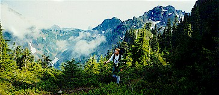
Sam said his legs hurt and Stephen was very concerned about our elevation and the elevation of our destination. I don’t know how many times I said stuff like: “well, we’re at 3400 feet and we need to get to 5400 feet, so there is quite a ways to go.”
“Are we halfway?”
“Well, I don’t know in terms of miles, but we still have 2000 feet to climb.”
“Oh that’s easy,” said Sam as he stabbed a decayed log with his stick. “We’ll be there in 5 minutes.”
“Sam, you’re stupid, that’s more like 6 hours…everyone knows that!” fumed Stephen.
“Well, no Stephen, assuming a constant grade that’s more like 2 hours or less…as long as we keep moving.”
Stab stab stab with the stick, went Sam.
I couldn’t blame them…this was the boring part, where you can’t see anything and the trail goes up and up. I enticed them with the glories of traveling above timberline where you walk through high meadows looking down to the valleys and across to snowy peaks, with marmots whistling at you from their boulders. They couldn’t wait, and soon we made it out of the trees.
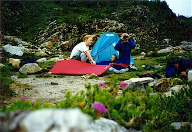
We ate lunch at a good view in the sun, thankful for everything. From here on all I heard from the boys were affirmations that this was the coolest thing they’d ever done, and thanks so much for letting us come here and words in that vein which made me feel great.
Actually, Stephen and Sam were excellent hiking partners. They carried heavy packs and this was all new to them, but all their words were of good cheer and amazement at their good fortune. We made good time and still managed to talk and joke the whole way. They were determined but prudent, and Stephen took special care to make sure our water supplies were always adequate. They refused offers on my part to lighten their packs and competed to carry the water bottle. They formulated opinions on the trail that matched my own in each particular. Isn’t hiking on a tough trail in the mountains way better than playing “Nintendo” or watching TV? How can people drive through these places and not want to get out and explore them?
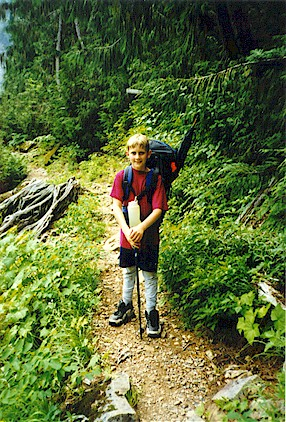
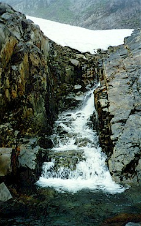
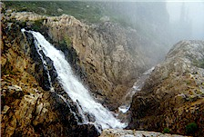
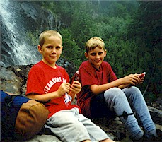
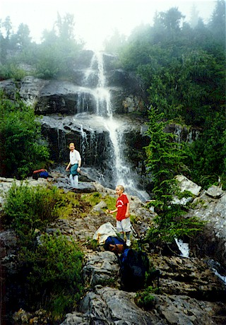
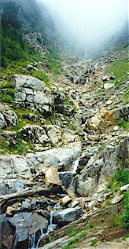
We were all taken with “King Kong’s Showerbath,”
a huge multi-level waterfall. As we progressed up, the afternoon
clouds drifted in and out mysteriously.
At one minute, we would all be looking at snowy peaks across the
valley, then clouds would block them instantly! We never managed
to see this happen, it only occurred when we looked away.
This was extremely beautiful, because each time the clouds
parted they revealed a different scene. Sometimes the valley below
would be blocked by a cloud layer, other times forest or rock would be
visible through holes.
At about 5 pm, we had to cross a snowpatch just before the basin. This was very exciting…how often do you see snow in summer?
Gothic Basin itself was glorious in the late afternoon sun. Heaps of boulders, little creeks, still mountain tarns, and rocky peaks on three sides. We set up the tent by a small lake. We thought this was Foggy Lake, but found out the next day that Foggy was a bit higher up. After a short rest we scrambled up and over several hillocks on warm pillow-like rock. It was after 8 pm when we headed back to the tent for a dinner of peanut butter and jelly sandwiches. It got colder and we piled into the tent when it was dark.
Here we ran into a huge problem. Sam had developed a very bad headache and couldn’t sleep. I had stupidly forgotten to bring aspirin, so we couldn’t really help him. The poor kid would try to sleep only to give up in frustration. After a while, his stomach hurt too. Stephen and I were worried and talked about options. Should I go back to the car, drive to a store and return with aspirin? It started raining. Sam felt even worse. Finally, we realized we’d just have to stick it out. I stroked Sam’s hair, which I hoped would help him fall asleep. Stephen and I both prayed for Sam to feel better. After about 2 hours, Sam was finally sound asleep and had no trouble the rest of the night. We were so thankful!
One thing to say about this unfortunate experience is how well the boys handled it. Stephen was nothing but concerned for his brother and Sam both appreciated our attempts to help and bore the pain and frustration when, ultimately, all we could do was show that we cared. Again, we were very thankful that he got to sleep.
The next day we awoke to rain and fog. No more would we have the
clear skies and warm sun. We got up and decided to go exploring
despite the bad weather. We had great fun naming sub-peaks in the
basin that we climbed. Sam and I named “Towel Rock” for a beach
towel near the summit (this was the only “litter” we saw by the way).
Stephen named our lake “Aqua Lake,” I named “Icy Peak” for some ice
we encountered near the summit. Our final destination was “Three
Brave Explorer’s Mountain,” named for us. This peak
was fun because we had to climb to a rocky pass, circle another
small lake (“zombie lake…zombies lay in the water and come out
at night!”), cross a snowfield, pass a waterfall, then walk up
a thin ridge. After this, we looked down on Aqua Lake from a
neat clifftop viewpoint, ate some food then headed back to camp.
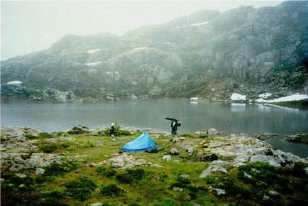
At camp the boys took a nap while I guided a fisherman up to Foggy Lake. The boys and I had walked almost there, but turned back before a dubious snowfield. This lake was indeed Foggy: I couldn’t see the end of it, and icebergs floated here and there. The fisherman was impressed with the boys ability, as we had done a hard climb. We gave him our campsite and said farewell to Gothic Basin.
Down we went, lunching at King Kong’s Showerbath, and zooming through the forest. We joked about Jimmy Dean Sausage commercials and laughed all the way down. On the forest floor, we covered the half mile to the road as weariness set in. At the dirt road, we still had a mile to go, so we had our last rest at the decomposing bridge. Sam and I performed a jig, and Stephen said I was weird for an adult.
The last mile went slowly, and our feet hurt. Finally, the car! Stephen was amazed at how good it felt to sit in a real chair, having forgotten what that was like. The whole way home, we reveled in the joy of civilization and air conditioning. Oh yes, and those of you who know the boys can imagine what we ate back in town: Jack in the Box tacos…many of them!